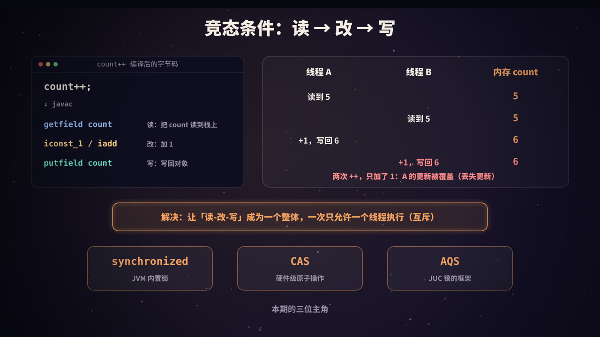
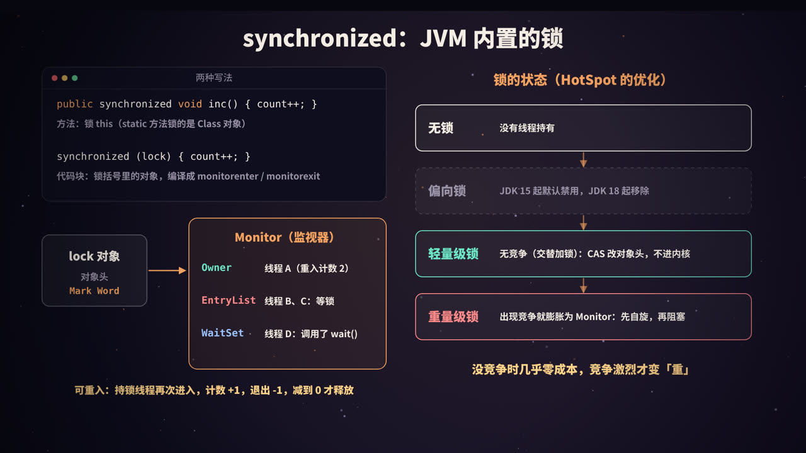
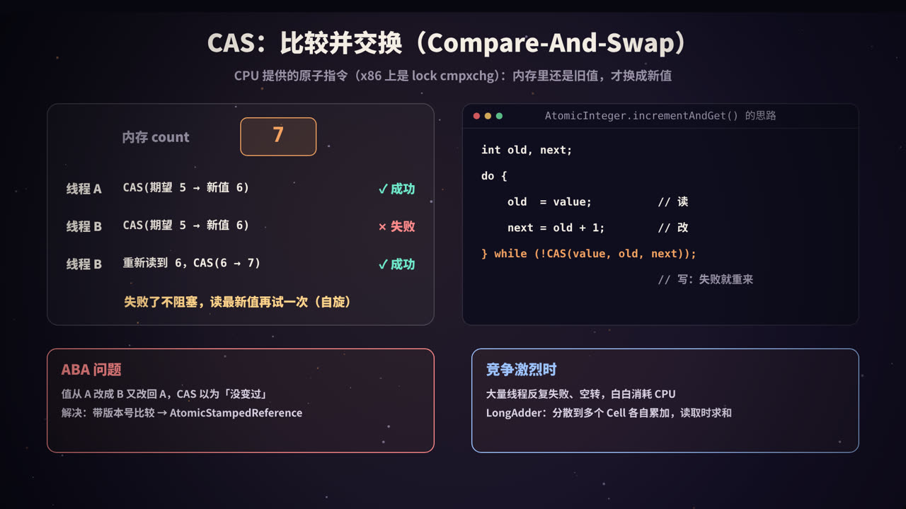
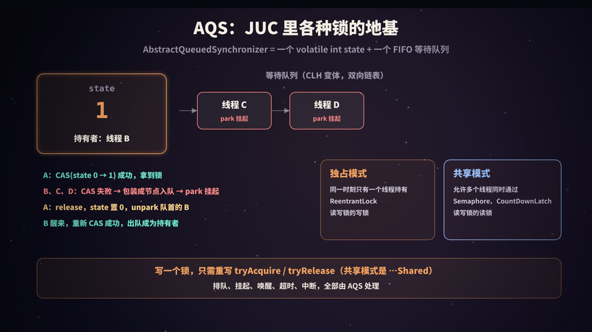
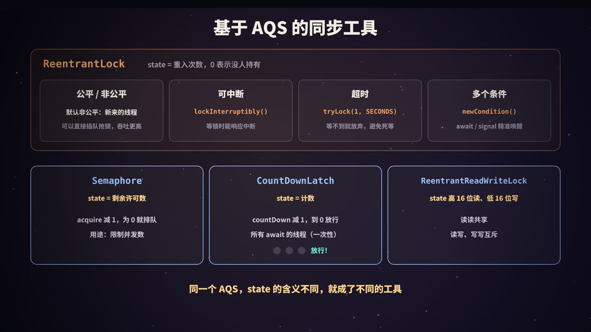
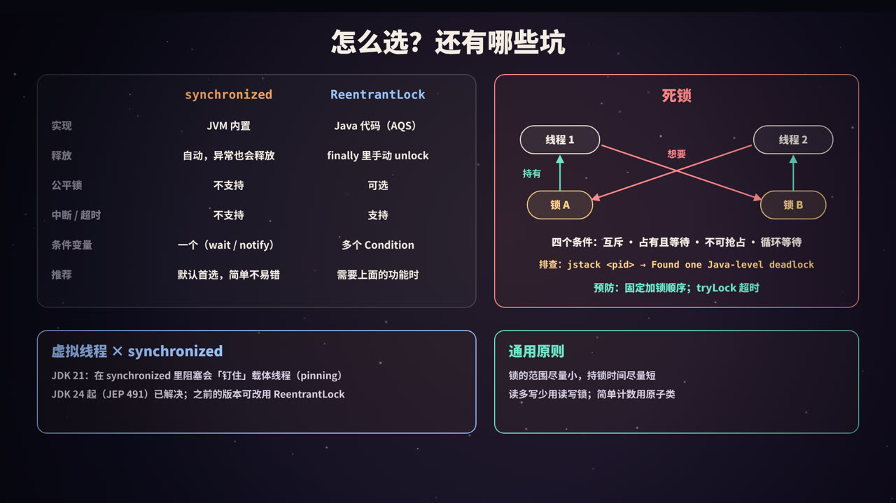

一个会算错的计数器
先看一段再普通不过的代码：4 个线程，每个线程执行 100 万次 count++，最后 count 应该是多少？
答案显然是 4,000,000。但在我的机器上实际跑一次，结果是 3,665,104，少了 33 万多次；再跑一次，又是另一个数字。
这不是 JVM 的 bug，而是多线程编程里最基础、也最容易被忽视的问题：竞态条件（Race Condition）。Java 为它准备了三套「武器」：
| 武器 | 层次 | 一句话 |
|---|---|---|
| synchronized | JVM 内置的关键字 | 给一段代码加互斥锁，进出自动加锁、解锁 |
| CAS | CPU 原子指令 | 「内存里还是旧值，才换成新值」，失败就重试，不阻塞 |
| AQS | java.util.concurrent 的框架 |
一个 state 加一个等待队列，ReentrantLock、Semaphore 等都建立在它之上 |
这篇文章从 count++ 为什么会错讲起，逐层拆开这三样东西，最后讲选型和常见的坑。
本系列《进程、线程与协程》讲了线程是什么，《线程池》讲了线程怎么复用；本文讲线程之间怎么「不打架」。如果关心多台机器之间的互斥，见本系列《分布式锁》。
竞态条件：count++ 其实是三步

一条语句，三条指令
count++ 在源码里只有一行，但用 javap -c 看编译后的字节码，它是这样的（count 是对象的字段）：
aload_0
dup
getfield #13 // 读：把 count 的值读到操作数栈上
iconst_1
iadd // 改：加 1
putfield #13 // 写：把结果写回对象
读、改、写是三个独立的步骤，中间随时可能被打断（线程切换），也可能在多个 CPU 核上真正同时执行。
交错执行的后果
假设 count 当前是 5，两个线程同时执行 count++：
| 时刻 | 线程 A | 线程 B | 内存中的 count |
|---|---|---|---|
| 1 | 读到 5 | 5 | |
| 2 | 读到 5 | 5 | |
| 3 | 加 1，写回 6 | 6 | |
| 4 | 加 1，写回 6 | 6 |
两次 ++，结果只加了 1：线程 A 的更新被线程 B 覆盖了，这叫丢失更新。
像这种「结果取决于多个线程执行的先后顺序」的情况，就叫竞态条件。会被多个线程同时访问、并且有读-改-写操作的那段代码，叫临界区。
解决思路有两种：
- 互斥（悲观）：同一时刻只允许一个线程进入临界区，其他线程排队等着。synchronized 和各种 Lock 都是这个思路；
- 乐观重试：不加锁，先算出新值，提交时检查「在我计算期间有没有人改过」，改过就重来。这就是 CAS。
另一个经常和竞态一起出现的问题是可见性：一个线程写的值，另一个线程不一定马上能看到。锁同时解决了互斥和可见性，这部分属于 Java 内存模型的内容，见本系列《volatile 与 Java 内存模型》。
synchronized：JVM 内置的锁

两种写法
public synchronized void inc() { count++; } // 锁的是 this
public static synchronized void sinc() { ... } // 锁的是 当前类的 Class 对象
public void inc2() {
synchronized (lock) { count++; } // 锁的是括号里的对象
}
记住一点：synchronized 锁的永远是一个对象，不是一段代码。两个线程只有竞争同一个对象的锁才会互斥。常见的错误是每次 new 一个锁对象，或者锁了一个会变的引用，等于没加锁。
编译之后是什么
用 javap -v 看下面这个类：
public class SyncBytecode {
private int count;
private final Object lock = new Object();
public synchronized void incMethod() { count++; }
public void incBlock() {
synchronized (lock) { count++; }
}
}
输出（节选）：
public synchronized void incMethod();
flags: (0x0021) ACC_PUBLIC, ACC_SYNCHRONIZED
Code:
0: aload_0
1: dup
2: getfield #13 // Field count:I
5: iconst_1
6: iadd
7: putfield #13 // Field count:I
10: return
public void incBlock();
Code:
0: aload_0
1: getfield #7 // Field lock:Ljava/lang/Object;
4: dup
5: astore_1
6: monitorenter
7: aload_0
8: dup
9: getfield #13 // Field count:I
12: iconst_1
13: iadd
14: putfield #13 // Field count:I
17: aload_1
18: monitorexit
19: goto 27
22: astore_2
23: aload_1
24: monitorexit
25: aload_2
26: athrow
27: return
Exception table:
from to target type
7 19 22 any
22 25 22 any
- 同步方法：没有额外的指令，只是方法标志里多了
ACC_SYNCHRONIZED，JVM 调用方法时自动加锁、返回或抛异常时自动解锁； - 同步代码块：编译成
monitorenter/monitorexit。注意有两个monitorexit：一个在正常路径，一个在异常处理路径（异常表里的any）。这就是「synchronized 抛异常也会自动释放锁」的原因。
对象头与 Monitor
锁的状态记在哪？在对象头里。HotSpot 中每个对象都有一个对象头，其中一部分叫 Mark Word（64 位 JVM 上是 64 位），平时存哈希码、GC 年龄等信息，加锁时会被改写成锁的信息。以传统的 64 位 HotSpot 为例，最后两位是锁标志：
| 锁标志位 | 状态 | Mark Word 中存的主要内容 |
|---|---|---|
01 |
无锁 | 哈希码、GC 分代年龄 |
00 |
轻量级锁 | 指向持锁线程栈上「锁记录」的指针 |
10 |
重量级锁 | 指向 Monitor 对象的指针 |
11 |
GC 标记 | 垃圾回收使用 |
偏向锁也使用
01标志位，靠另外一个「偏向位」区分。另外，新版本 JDK 正在引入更紧凑的对象头（如 JEP 450），具体布局会有变化，但「对象头里记录锁状态」这个思路不变。
当锁进入重量级状态时，对象关联一个 Monitor（监视器，HotSpot 中的实现叫 ObjectMonitor，用 C++ 编写）。可以把它想象成一个带等候区的房间：
| 部分 | 作用 |
|---|---|
| Owner | 当前持有锁的线程 |
| 重入计数 | 持有者进入了几次 |
| EntryList（及相关队列） | 抢锁失败、在门口等待的线程，状态是 BLOCKED |
| WaitSet | 拿到过锁、但调用了 wait() 主动让出锁的线程，状态是 WAITING / TIMED_WAITING，要等 notify() |
这也解释了为什么 wait() / notify() 必须在 synchronized 块里调用：它们操作的就是这个对象的 Monitor，没持有锁就调用会抛 IllegalMonitorStateException。
可重入
可重入：已经持有锁的线程，可以再次进入同一把锁保护的代码，而不会自己把自己锁死：
public synchronized void a() { b(); } // 已持有 this 的锁
public synchronized void b() { ... } // 再次获取 this 的锁：成功，计数 +1
每进入一次计数加 1，每退出一次减 1，减到 0 才真正释放。synchronized 和 ReentrantLock 都是可重入的。
锁升级：没竞争时几乎零成本
早期的 synchronized 一上来就是「重量级锁」：抢不到就让操作系统把线程挂起，涉及用户态和内核态切换，开销大。JDK 6 起，HotSpot 做了一系列优化，让锁根据竞争情况选择不同的实现：
| 状态 | 适用场景 | 做法 |
|---|---|---|
| 无锁 | 没有线程持有 | — |
| 偏向锁 | 始终只有一个线程加锁 | 在对象头里记下这个线程，以后它再来几乎不用做任何事。JDK 15 起默认禁用并被标记为废弃（JEP 374），JDK 18 起相关实现被移除 |
| 轻量级锁 | 多个线程交替加锁，没有真正同时争抢 | 用 CAS 把 Mark Word 替换为指向线程栈上锁记录的指针，不需要进入内核 |
| 重量级锁 | 真正出现竞争 | 膨胀为 Monitor；抢锁时先自适应自旋一会儿，还抢不到才阻塞挂起 |
几点说明：
- 偏向锁为什么被去掉：它在早期「大量使用
Vector、Hashtable这类同步集合」的代码里收益明显，但撤销偏向需要在安全点进行，代价高、实现复杂。现代代码更多使用非同步集合或 JUC 并发容器，收益已经不值得维护成本。在 JDK 21 上执行java -XX:+UseBiasedLocking -version，会直接报Unrecognized VM option； - 常说「锁只能升级不能降级」，这是一种简化。HotSpot 会在后台把长时间空闲的 Monitor 回收（deflation），对象重新回到无锁状态；
- JIT 还会做锁消除和锁粗化：如果逃逸分析发现锁对象不会被其他线程访问，就把锁直接去掉；如果一段代码里对同一个对象反复加锁、解锁，就合并成一次。
- 新版本 HotSpot 还在持续改进轻量级锁的实现，细节在变，但「没竞争时用 CAS，竞争激烈再退化为排队阻塞」的总体思路一直没变。
CAS：比较并交换

一条原子指令
CAS（Compare-And-Swap）有三个参数：内存地址 V、期望的旧值 A、新值 B。它做的事情是：
如果 V 处的值等于 A，就把它改成 B，返回成功；否则什么也不做，返回失败。
关键在于：「比较」和「交换」是一条 CPU 指令完成的，中间不会被打断。x86 上是带 lock 前缀的 cmpxchg 指令，ARM 上有对应的原子指令。
用 CAS 实现 count++：
// AtomicInteger.incrementAndGet() 的思路
int old, next;
do {
old = value; // 读
next = old + 1; // 改
} while (!compareAndSet(old, next)); // 写：如果期间被人改过，就失败重来
return next;
如果两个线程都读到 5，都想改成 6：先执行 CAS 的线程成功；另一个线程的 CAS 发现值已经是 6、不等于期望的 5，于是失败，重新读到 6，再算出 7，再 CAS。没有线程被阻塞，失败的一方原地重试，这叫自旋。
实际实现上，
AtomicInteger通过Unsafe（新代码中更推荐VarHandle）调用底层原子操作；在 x86 上，JIT 甚至会把incrementAndGet直接编译成一条lock xadd指令。上面的循环表达的是 CAS 的通用用法：任何「读-改-写」都可以写成这样的重试循环，比如AtomicInteger.updateAndGet(x -> x * 2)。
java.util.concurrent.atomic 包里的原子类都是基于这个思路：AtomicInteger、AtomicLong、AtomicBoolean、AtomicReference，以及数组版本和字段更新器。CAS 也是 synchronized 轻量级锁和 AQS 的基础。
ABA 问题
CAS 只比较「值是不是一样」，不关心「中间有没有变过」：
- 线程 1 读到值 A，准备把它改成 C；
- 线程 2 把 A 改成 B，又改回 A；
- 线程 1 执行 CAS(A → C)，成功了，它以为没人动过。
对于计数器这类场景，ABA 无所谓；但如果值是一个引用，比如用 CAS 实现的无锁栈的栈顶指针，「同一个节点被弹出又压回」可能意味着链表结构已经变了，这时 ABA 会导致数据错乱。
解决办法是加版本号：每次修改都让版本号加 1，CAS 时值和版本号都要对上。Java 提供了 AtomicStampedReference：
import java.util.concurrent.atomic.AtomicReference;
import java.util.concurrent.atomic.AtomicStampedReference;
public class AbaDemo {
public static void main(String[] args) {
// 普通 CAS：只比较值
AtomicReference<String> ref = new AtomicReference<>("A");
String seen = ref.get(); // 线程 1 读到 A，准备把它改成 C
ref.set("B"); ref.set("A"); // 期间线程 2 把它改成 B 又改回 A
System.out.println("AtomicReference CAS(A→C) = " + ref.compareAndSet(seen, "C"));
// 带版本号的 CAS：值和版本号都要对上
AtomicStampedReference<String> sref = new AtomicStampedReference<>("A", 0);
int stamp = sref.getStamp(); // 线程 1 读到 (A, 版本 0)
String v = sref.getReference();
sref.compareAndSet("A", "B", 0, 1); // 线程 2：A→B，版本 1
sref.compareAndSet("B", "A", 1, 2); // 线程 2：B→A，版本 2
System.out.println("AtomicStampedReference CAS(A→C) = " + sref.compareAndSet(v, "C", stamp, stamp + 1)
+ "（当前版本 " + sref.getStamp() + "，期望版本 " + stamp + "）");
}
}
输出：
AtomicReference CAS(A→C) = true
AtomicStampedReference CAS(A→C) = false（当前版本 2，期望版本 0）
（为了让结果确定，这里用单线程模拟了两个线程的先后顺序。）数据库里的乐观锁 UPDATE ... SET version = version + 1 WHERE id = ? AND version = ? 也是同样的思路。
竞争激烈时：LongAdder
CAS 在低竞争时很快，但如果几十个线程同时更新同一个变量，大部分 CAS 都会失败、重试、再失败，CPU 都在空转；而且所有核心都在争抢同一个缓存行，缓存行在核心之间来回传递，开销也很大。
JDK 8 引入的 LongAdder 用分散热点的办法解决：
- 内部有一个
base和一个Cell[]数组； - 没有竞争时直接 CAS 更新
base； - 出现竞争后，不同线程被分散到不同的
Cell上各自累加，数组大小按需扩容（2 的幂，上限与 CPU 核数相关）； sum()时把base和所有Cell加起来。Cell之间做了缓存行填充，避免伪共享。
代价是：sum() 不是一个原子快照（求和过程中其他线程可能还在加），而且占用内存更多。所以它适合写多读少的统计计数（如 QPS、调用次数）；需要「加完立刻拿到精确的新值」时（如生成序号），还是用 AtomicLong。
实验：四种计数方式
把开头的计数器分别用四种方式实现，比较结果和耗时：
import java.util.concurrent.atomic.AtomicInteger;
import java.util.concurrent.atomic.LongAdder;
public class CounterDemo {
static final int THREADS = 4, N = 1_000_000; // 4 个线程，每个加 100 万次
static int plain = 0; // 1. 什么都不加
static int synced = 0; // 2. synchronized
static final Object LOCK = new Object();
static final AtomicInteger atomic = new AtomicInteger(); // 3. CAS
static final LongAdder adder = new LongAdder(); // 4. 分段累加
// 让 THREADS 个线程同时执行 body，返回耗时（毫秒）
static long run(Runnable body) throws InterruptedException {
Thread[] ts = new Thread[THREADS];
long start = System.nanoTime();
for (int i = 0; i < THREADS; i++) (ts[i] = new Thread(body)).start();
for (Thread t : ts) t.join();
return (System.nanoTime() - start) / 1_000_000;
}
public static void main(String[] args) throws Exception {
System.out.printf("CPU 核数: %d，期望结果: %,d%n%n", Runtime.getRuntime().availableProcessors(), THREADS * N);
long t1 = run(() -> { for (int i = 0; i < N; i++) plain++; });
System.out.printf("%s 结果 %,10d 耗时 %4d ms%n", "不加锁 ", plain, t1);
long t2 = run(() -> { for (int i = 0; i < N; i++) synchronized (LOCK) { synced++; } });
System.out.printf("%s 结果 %,10d 耗时 %4d ms%n", "synchronized ", synced, t2);
long t3 = run(() -> { for (int i = 0; i < N; i++) atomic.incrementAndGet(); });
System.out.printf("%s 结果 %,10d 耗时 %4d ms%n", "AtomicInteger ", atomic.get(), t3);
long t4 = run(() -> { for (int i = 0; i < N; i++) adder.increment(); });
System.out.printf("%s 结果 %,10d 耗时 %4d ms%n", "LongAdder ", adder.sum(), t4);
}
}
用 JDK 21 直接运行 java -Dstdout.encoding=UTF-8 CounterDemo.java，我的机器（2 核）上一次的输出：
CPU 核数: 2，期望结果: 4,000,000
不加锁 结果 3,665,104 耗时 28 ms
synchronized 结果 4,000,000 耗时 248 ms
AtomicInteger 结果 4,000,000 耗时 64 ms
LongAdder 结果 4,000,000 耗时 56 ms
多跑几次，「不加锁」的结果每次都不一样（我看到过 3,954,724、3,905,328、2,973,138 等），其余三种始终是 4,000,000。耗时也有波动，synchronized 在 126～254 ms 之间。几点解读：
- 不加锁最快，但结果是错的，再快也没有意义；
- synchronized 最慢：每次
++都要加锁、解锁，4 个线程激烈竞争同一把锁，锁膨胀为重量级锁，线程频繁阻塞、唤醒； - 原子类快得多：一条原子指令搞定，不阻塞线程；
- 这台机器只有 2 个核，竞争不够激烈，
LongAdder相对AtomicInteger的优势体现得不明显。核数越多、线程越多，LongAdder的优势越大。
这只是一个粗略的演示，不是严谨的基准测试（没有预热，计时包含线程创建）。要严谨地比较性能，请使用 JMH。另外，「在循环里每次都加锁」本身就是一种反模式，实际代码应该让每个线程先在局部变量里累加，最后再合并一次。
AQS：JUC 锁的地基

synchronized 是 JVM 用 C++ 实现的；而 java.util.concurrent（JUC）里的 ReentrantLock、Semaphore、CountDownLatch、ReentrantReadWriteLock 等，都是用 Java 代码写的，它们共同的基础是 AbstractQueuedSynchronizer（抽象队列同步器，简称 AQS）。
两个核心部件
volatile int state：同步状态。它的含义由子类决定：ReentrantLock 里是重入次数，Semaphore 里是剩余许可数，CountDownLatch 里是剩余计数；- FIFO 等待队列：一个 CLH 队列的变体，是由节点组成的双向链表，每个节点包装一个等待中的线程。
AQS 用 CAS 修改 state 和队列指针，用 LockSupport.park() / unpark() 挂起和唤醒线程。
获取与释放的流程
以独占模式为例：
获取（acquire）：
- 调用子类实现的
tryAcquire()，通常是用 CAS 修改state，成功就直接返回，拿到锁； - 失败：把当前线程包装成节点，用 CAS 加到队尾；
- 如果自己排在队首（前驱是头节点），再尝试一次
tryAcquire()； - 还是失败，就
park()挂起，等待被唤醒；被唤醒后回到第 3 步。
释放（release）：
- 调用子类实现的
tryRelease()，修改state； - 如果锁已完全释放，
unpark()唤醒队列中的下一个线程。
头节点是一个「哑节点」，代表当前持有锁（或刚刚释放锁）的位置。等待超时或被中断的节点会被标记为取消，并从队列中清理掉。
独占与共享
| 模式 | 子类需要实现 | 含义 | 例子 |
|---|---|---|---|
| 独占 | tryAcquire / tryRelease |
同一时刻只有一个线程能获取 | ReentrantLock、读写锁的写锁 |
| 共享 | tryAcquireShared / tryReleaseShared |
多个线程可以同时获取；一个线程获取成功后，会继续唤醒后面同样在等共享资源的线程 | Semaphore、CountDownLatch、读写锁的读锁 |
这就是模板方法模式：排队、挂起、唤醒、超时、中断这些最难写对的部分，AQS 全部实现好了；子类只需要回答一个问题——「在当前 state 下，这次获取能不能成功？」
实验：用 AQS 手写一把互斥锁
下面用 AQS 实现一个不可重入的互斥锁：state = 0 表示空闲，1 表示被占用。
import java.util.concurrent.TimeUnit;
import java.util.concurrent.locks.AbstractQueuedSynchronizer;
import java.util.concurrent.locks.Condition;
import java.util.concurrent.locks.Lock;
/** 用 AQS 手写一个不可重入的互斥锁：state = 0 表示空闲，1 表示被占用 */
public class Mutex implements Lock {
private static class Sync extends AbstractQueuedSynchronizer {
@Override
protected boolean tryAcquire(int arg) {
if (compareAndSetState(0, 1)) { // CAS 抢锁
setExclusiveOwnerThread(Thread.currentThread());
return true;
}
return false; // 失败：AQS 负责入队、park
}
@Override
protected boolean tryRelease(int arg) {
if (getState() == 0) throw new IllegalMonitorStateException();
setExclusiveOwnerThread(null);
setState(0); // state 是 volatile，写入对后继线程可见
return true; // 返回 true：AQS 去唤醒队列里的下一个
}
@Override
protected boolean isHeldExclusively() {
return getExclusiveOwnerThread() == Thread.currentThread();
}
Condition newCondition() { return new ConditionObject(); }
}
private final Sync sync = new Sync();
public void lock() { sync.acquire(1); }
public void lockInterruptibly() throws InterruptedException { sync.acquireInterruptibly(1); }
public boolean tryLock() { return sync.tryAcquire(1); }
public boolean tryLock(long t, TimeUnit u) throws InterruptedException { return sync.tryAcquireNanos(1, u.toNanos(t)); }
public void unlock() { sync.release(1); }
public Condition newCondition() { return sync.newCondition(); }
int queueLength() { return sync.getQueueLength(); }
// ---------------- 测试 ----------------
static int count = 0;
public static void main(String[] args) throws Exception {
Mutex m = new Mutex();
// 1. 互斥：4 个线程各加 100 万次
Thread[] ts = new Thread[4];
for (int i = 0; i < ts.length; i++) {
ts[i] = new Thread(() -> {
for (int j = 0; j < 1_000_000; j++) { m.lock(); try { count++; } finally { m.unlock(); } }
});
ts[i].start();
}
for (Thread t : ts) t.join();
System.out.printf("1. 互斥：count = %,d（期望 4,000,000）%n", count);
// 2. 排队：主线程持锁，3 个线程来抢，都会进入 AQS 队列
m.lock();
Thread[] waiters = new Thread[3];
for (int i = 0; i < 3; i++) {
int id = i;
waiters[i] = new Thread(() -> { m.lock(); try { System.out.println(" 线程 " + id + " 拿到锁"); } finally { m.unlock(); } });
waiters[i].start();
}
while (m.queueLength() < 3) Thread.sleep(10);
System.out.println("2. 排队：等待队列长度 = " + m.queueLength() + "，线程 0 的状态 = " + waiters[0].getState());
m.unlock();
for (Thread t : waiters) t.join();
// 3. 不可重入：已经持有锁的线程再 tryLock 会失败
m.lock();
System.out.println("3. 不可重入：持锁时再 tryLock() = " + m.tryLock());
m.unlock();
// 4. 超时：别的线程持锁，tryLock 等 200ms 后放弃
Thread holder = new Thread(() -> { m.lock(); try { Thread.sleep(500); } catch (InterruptedException e) {} finally { m.unlock(); } });
holder.start(); Thread.sleep(50);
long st = System.nanoTime();
boolean got = m.tryLock(200, TimeUnit.MILLISECONDS);
System.out.printf("4. 超时：tryLock(200ms) = %s，等了约 %d ms%n", got, (System.nanoTime() - st) / 1_000_000);
holder.join();
}
}
输出：
1. 互斥：count = 4,000,000（期望 4,000,000）
2. 排队：等待队列长度 = 3，线程 0 的状态 = WAITING
线程 0 拿到锁
线程 1 拿到锁
线程 2 拿到锁
3. 不可重入：持锁时再 tryLock() = false
4. 超时：tryLock(200ms) = false，等了约 200 ms
只写了三个很短的方法，就得到了一把支持排队、阻塞、超时、可中断、条件变量的锁。几个值得注意的地方：
- 排队的线程状态是
WAITING（被LockSupport.park挂起），而等 synchronized 的线程状态是BLOCKED。用 jstack 排查问题时，这能帮你区分线程卡在哪种锁上； - 第 3 步说明这把锁不可重入：如果持锁线程调用
lock()（而不是tryLock()），它会把自己挂起，永远等不到。ReentrantLock 的做法是：发现持有者就是自己时，state + 1； - 第 2 步中三个线程拿到锁的顺序，取决于它们入队的顺序。
基于 AQS 的同步工具

ReentrantLock
state 表示重入次数，0 表示没有线程持有。相比 synchronized，它多了几项能力：
| 能力 | API | 说明 |
|---|---|---|
| 公平 / 非公平 | new ReentrantLock(true) |
默认非公平：新来的线程会先直接 CAS 抢一次，抢到就插队。公平锁则先检查队列里有没有人在等，有就老实排队。非公平锁吞吐更高（省掉了一次挂起-唤醒），但个别线程可能等很久 |
| 可中断 | lockInterruptibly() |
等锁的过程中可以响应 interrupt()，抛出 InterruptedException 退出等待 |
| 超时 | tryLock(1, TimeUnit.SECONDS) |
等不到就放弃，返回 false，可以用来避免死锁 |
| 多个条件 | newCondition() |
一把锁可以有多个等待队列，await() / signal() 精准唤醒 |
一个细节：不带参数的
tryLock()即使在公平锁上也会直接插队抢锁，这是 Javadoc 中明确写的行为。想遵守公平性，可以用tryLock(0, TimeUnit.SECONDS)。
使用 ReentrantLock 的固定写法：
lock.lock(); // 放在 try 外面：如果加锁本身失败，不应该执行 unlock
try {
// 临界区
} finally {
lock.unlock(); // 一定在 finally 里释放，否则异常时锁永远不会被释放
}
实验：用 Condition 写生产者-消费者
synchronized 只有一个等待集合，notifyAll() 会把生产者和消费者一起叫醒。ReentrantLock 可以给「缓冲区不满」和「缓冲区不空」各建一个条件队列，只唤醒真正需要的线程：
import java.util.ArrayDeque;
import java.util.Queue;
import java.util.concurrent.locks.Condition;
import java.util.concurrent.locks.ReentrantLock;
public class BoundedBuffer {
private final Queue<Integer> items = new ArrayDeque<>();
private final int capacity;
private final ReentrantLock lock = new ReentrantLock();
private final Condition notFull = lock.newCondition(); // 「有空位了」
private final Condition notEmpty = lock.newCondition(); // 「有数据了」
BoundedBuffer(int capacity) { this.capacity = capacity; }
public void put(int x) throws InterruptedException {
lock.lock();
try {
while (items.size() == capacity) { // 用 while，不用 if：醒来后要重新检查条件
System.out.println(" 缓冲区满，生产者等待");
notFull.await(); // 释放锁并等待
}
items.add(x);
System.out.println("生产 " + x + " 缓冲区=" + items);
notEmpty.signal(); // 只叫醒等「有数据」的线程
} finally {
lock.unlock();
}
}
public int take() throws InterruptedException {
lock.lock();
try {
while (items.isEmpty()) notEmpty.await();
int x = items.poll();
System.out.println(" 消费 " + x + " 缓冲区=" + items);
notFull.signal();
return x;
} finally {
lock.unlock();
}
}
public static void main(String[] args) throws Exception {
BoundedBuffer buf = new BoundedBuffer(2);
Thread producer = new Thread(() -> {
try { for (int i = 1; i <= 5; i++) buf.put(i); } catch (InterruptedException ignored) {}
});
Thread consumer = new Thread(() -> {
try {
int sum = 0;
for (int i = 1; i <= 5; i++) { Thread.sleep(50); sum += buf.take(); } // 消费得慢一点
System.out.println("消费者收到的总和 = " + sum);
} catch (InterruptedException ignored) {}
});
producer.start(); consumer.start();
producer.join(); consumer.join();
}
}
输出（线程调度不同，交错顺序可能略有差异）：
生产 1 缓冲区=[1]
生产 2 缓冲区=[1, 2]
缓冲区满，生产者等待
消费 1 缓冲区=[2]
生产 3 缓冲区=[2, 3]
缓冲区满，生产者等待
消费 2 缓冲区=[3]
生产 4 缓冲区=[3, 4]
缓冲区满，生产者等待
消费 3 缓冲区=[4]
生产 5 缓冲区=[4, 5]
消费 4 缓冲区=[5]
消费 5 缓冲区=[]
消费者收到的总和 = 15
两个要点：
await()会释放锁并进入条件队列；被signal()后，线程从条件队列转移到 AQS 的同步队列，重新抢到锁之后才从await()返回；- 等待条件必须用
while循环检查，不能用if：线程被唤醒时条件不一定成立（可能被别的线程抢先消费，也可能是虚假唤醒）。
实际项目中直接用 ArrayBlockingQueue 就行，它内部正是「一把 ReentrantLock + notEmpty、notFull 两个 Condition」的实现。
Semaphore：控制并发数
state 是剩余许可数。acquire() 把许可减 1，减到 0 时后来的线程排队；release() 加 1 并唤醒等待者。典型用途是限制同时访问某个资源的线程数，比如最多 10 个线程同时调用下游接口。它同样支持公平和非公平模式。
Semaphore permits = new Semaphore(10);
permits.acquire();
try { callDownstream(); } finally { permits.release(); }
单机限流用 Semaphore 控制的是「并发数」，而不是「每秒请求数」，两者的区别见本系列《限流算法》。
CountDownLatch：等大家都到齐
state 是剩余计数。countDown() 减 1；await() 的线程在计数到 0 之前一直等待，一到 0 就全部放行。典型用途是主线程等待多个子任务完成，或者让多个线程在同一时刻开始执行（压测）。
它是一次性的，计数到 0 后不能重置。需要反复使用的「集合点」，可以用 CyclicBarrier（内部基于 ReentrantLock 和 Condition）或 Phaser。
ReentrantReadWriteLock：读多写少
一个 int 型的 state 被拆成两半：高 16 位记录读锁的持有次数，低 16 位记录写锁的重入次数。
| 读锁 | 写锁 | |
|---|---|---|
| 读锁 | 共享，可以同时持有 | 互斥 |
| 写锁 | 互斥 | 互斥 |
注意两条规则：
- 锁降级可以：持有写锁时，可以再获取读锁，然后释放写锁，从而「降级」为读锁；
- 锁升级不行：持有读锁时去获取写锁会一直等待（写锁要等所有读锁释放，包括自己持有的），造成死锁。
读写锁适合读远多于写、且读操作耗时较长的场景，如本地缓存。如果读操作很短，读写锁维护读计数的开销可能抵消收益。JDK 8 还提供了 StampedLock，支持「乐观读」（读时不加锁，读完检查期间是否有写入），性能更好，但它不可重入、不支持 Condition，用起来更容易出错。它也不是基于 AQS 实现的。
怎么选？还有哪些坑

synchronized 还是 ReentrantLock
| synchronized | ReentrantLock | |
|---|---|---|
| 实现 | JVM 内置（Monitor） | Java 代码（AQS） |
| 加锁、释放 | 自动，抛异常也会释放 | 手动，必须在 finally 里 unlock() |
| 可重入 | 是 | 是 |
| 公平锁 | 不支持（非公平） | 可选 |
| 等锁时可中断 | 不可以 | lockInterruptibly() |
| 超时放弃 | 不可以 | tryLock(timeout) |
| 条件变量 | 一个（wait / notify） |
多个 Condition |
| 等锁的线程状态 | BLOCKED |
WAITING / TIMED_WAITING |
| 性能 | JDK 6 优化后与 ReentrantLock 相当 | 相当 |
选择建议：默认用 synchronized，代码简单，不会忘记解锁；当你需要超时、可中断、公平性、多个条件中的任何一项时，再用 ReentrantLock。至于性能，在现代 JDK 上通常不是选择的依据，用 JMH 实测说话。
死锁
两个线程各持有一把锁，又都在等对方手里的那一把，谁也不放手，就形成了死锁。下面这段代码几乎每次都会死锁：
public class Deadlock {
static final Object A = new Object(), B = new Object();
public static void main(String[] args) {
new Thread(() -> {
synchronized (A) { sleep(100); synchronized (B) { System.out.println("t1 done"); } }
}, "worker-1").start();
new Thread(() -> {
synchronized (B) { sleep(100); synchronized (A) { System.out.println("t2 done"); } }
}, "worker-2").start();
}
static void sleep(long ms) { try { Thread.sleep(ms); } catch (InterruptedException e) {} }
}
运行后程序卡住不动。用 jps 找到进程号，再执行 jstack <pid>，输出的最后部分会直接告诉你发生了死锁（地址每次不同）：
Found one Java-level deadlock:
=============================
"worker-1":
waiting to lock monitor 0x00007fa834060510 (object 0x00000000a8518690, a java.lang.Object),
which is held by "worker-2"
"worker-2":
waiting to lock monitor 0x00007fa8300015b0 (object 0x00000000a8518680, a java.lang.Object),
which is held by "worker-1"
Java stack information for the threads listed above:
===================================================
"worker-1":
at Deadlock.lambda$main$0(Deadlock.java:6)
- waiting to lock <0x00000000a8518690> (a java.lang.Object)
- locked <0x00000000a8518680> (a java.lang.Object)
...
"worker-2":
at Deadlock.lambda$main$1(Deadlock.java:9)
- waiting to lock <0x00000000a8518680> (a java.lang.Object)
- locked <0x00000000a8518690> (a java.lang.Object)
...
Found 1 deadlock.
（这里省略了栈中与本例无关的几行。）给线程起有意义的名字，排查时会轻松很多。除了 jstack，还可以用 jcmd <pid> Thread.print、JConsole / VisualVM 的「检测死锁」按钮，或者在程序里调用 ThreadMXBean.findDeadlockedThreads() 做监控告警。
死锁的发生需要同时满足四个条件：
| 条件 | 含义 | 怎么破坏 |
|---|---|---|
| 互斥 | 资源同一时刻只能被一个线程持有 | 通常无法破坏，这正是锁的意义 |
| 占有且等待 | 拿着一把锁，又去等另一把 | 一次性申请所有需要的锁 |
| 不可抢占 | 别人不能强行夺走已持有的锁 | 用 tryLock(timeout)，等不到就主动释放已持有的锁、稍后重试 |
| 循环等待 | 线程之间形成「你等我、我等你」的环 | 所有线程按固定顺序加锁（如按账户 ID 从小到大） |
最常用、最有效的是最后一条。比如转账时同时锁住两个账户，就按账户 ID 的大小决定加锁顺序，而不是「先锁转出方、再锁转入方」——后者在 A 转 B 和 B 转 A 同时发生时就会死锁。
数据库里也会发生死锁，InnoDB 会自动检测并回滚其中一个事务，见本系列《MySQL 的锁》。
虚拟线程与 synchronized 的 pinning
JDK 21 正式推出了虚拟线程（JEP 444）。虚拟线程运行在少量「载体线程」（平台线程）之上，遇到阻塞操作时会从载体线程上卸载，让出载体线程去运行别的虚拟线程。
但在 JDK 21 中有一个限制：虚拟线程在 synchronized 块内阻塞时，无法卸载，会把载体线程一起「钉住」（pinning）。如果很多虚拟线程都在 synchronized 里做 IO，载体线程会被占满，吞吐大幅下降，严重时甚至死锁。
JDK 21 提供了 -Djdk.tracePinnedThreads 参数来发现这种情况：
import java.util.concurrent.locks.ReentrantLock;
public class Pinning {
static final Object MONITOR = new Object();
static final ReentrantLock LOCK = new ReentrantLock();
public static void main(String[] args) throws Exception {
// 在 synchronized 块里阻塞（sleep 代表一次慢 IO）
Thread.ofVirtual().start(() -> {
synchronized (MONITOR) { sleep(20); }
}).join();
System.out.println("---- 换成 ReentrantLock ----");
Thread.ofVirtual().start(() -> {
LOCK.lock();
try { sleep(20); } finally { LOCK.unlock(); }
}).join();
System.out.println("结束");
}
static void sleep(long ms) { try { Thread.sleep(ms); } catch (InterruptedException e) {} }
}
在 JDK 21 上运行 java -Dstdout.encoding=UTF-8 -Djdk.tracePinnedThreads=short Pinning.java：
VirtualThread[#19]/runnable@ForkJoinPool-1-worker-1 reason:MONITOR
Pinning.lambda$main$0(Pinning.java:10) <== monitors:1
---- 换成 ReentrantLock ----
结束
synchronized 版本被报告为因 MONITOR 而钉住；换成 ReentrantLock 后没有任何报告，因为 AQS 用的是 LockSupport.park()，虚拟线程可以正常卸载。所以在 JDK 21～23 上使用虚拟线程时，常见的建议是把「持锁期间会阻塞」的 synchronized 换成 ReentrantLock。
JDK 24 通过 JEP 491 解决了这个问题：虚拟线程在 synchronized 中阻塞（包括 Object.wait()）时也可以卸载了，jdk.tracePinnedThreads 参数随之被移除。调用本地方法等少数情况下仍会钉住，可以用 JFR 的 jdk.VirtualThreadPinned 事件观察。
通用原则
- 锁的范围尽量小：只把真正需要互斥的代码放进临界区，不要在持锁时做 IO、远程调用；
- 锁的粒度尽量细：
ConcurrentHashMap就是靠「只锁一个桶」而不是锁整张表获得高并发； - 能不用锁就不用：简单计数用原子类，不可变对象天然线程安全，线程封闭（
ThreadLocal、局部变量）不需要同步； - 优先用现成的并发工具：
ConcurrentHashMap、BlockingQueue、CompletableFuture，比自己用锁拼更不容易出错； - 锁对象要
private final：不要锁String字面量、包装类型（如Integer）这类可能被共享或缓存的对象，也不要锁会被重新赋值的字段。
高频面试题速答
Q：synchronized 的原理是什么？
同步代码块编译为 monitorenter / monitorexit，同步方法通过 ACC_SYNCHRONIZED 标志实现。锁状态记录在对象头的 Mark Word 中，竞争时关联一个 Monitor 对象，包含持有者、重入计数、等待锁的线程队列和调用 wait() 的等待集合。
Q：说说锁升级的过程。 无锁 → 轻量级锁（交替加锁时用 CAS 修改对象头，不进内核）→ 重量级锁（出现竞争时膨胀为 Monitor，先自适应自旋，再阻塞）。偏向锁在 JDK 15 起默认禁用，JDK 18 起已移除，回答时最好说明版本。
Q：CAS 是什么？有什么问题？
比较并交换，由 CPU 原子指令保证。问题有三：ABA 问题（用 AtomicStampedReference 加版本号解决）；高竞争时自旋空耗 CPU（用 LongAdder 分散热点）；只能保证一个变量的原子性（多个变量要合并成一个对象用 AtomicReference，或者加锁）。
Q：AQS 的原理？
一个 volatile int state 加一个 CLH 变体的 FIFO 双向队列。获取失败的线程被包装成节点入队，并通过 LockSupport.park() 挂起；释放时唤醒后继节点。子类只需实现 tryAcquire / tryRelease（或共享模式的对应方法）定义 state 的语义。
Q：ReentrantLock 怎么实现可重入和公平性？
获取时如果发现持有者是当前线程，就把 state 加 1；释放时减 1，到 0 才真正释放。公平锁在获取前先检查队列中是否有更早等待的线程（hasQueuedPredecessors），非公平锁直接尝试 CAS 插队。
Q：synchronized 和 ReentrantLock 怎么选？
默认用 synchronized；需要超时、可中断、公平锁或多个条件变量时用 ReentrantLock，且必须在 finally 中释放。
Q：如何排查和避免死锁？
用 jstack / jcmd 查看线程栈，JVM 会直接报告 Found one Java-level deadlock。避免死锁：按固定顺序加锁、用 tryLock 加超时、缩小锁的范围、避免持锁时调用外部方法。
Q：LongAdder 为什么比 AtomicLong 快？
AtomicLong 所有线程 CAS 同一个变量，竞争激烈时大量失败重试；LongAdder 把累加分散到多个 Cell 上，减少冲突，求和时再合并。代价是 sum() 不是原子快照、占用内存更多。
总结
count++是读-改-写三步，多线程交错执行会丢失更新，这就是竞态条件；- synchronized：JVM 内置，锁的是对象；靠对象头的 Mark Word 和 Monitor 实现；可重入；没有竞争时用 CAS 轻量加锁，竞争激烈才膨胀为重量级锁。偏向锁已成为历史；
- CAS：CPU 原子指令，「内存里还是旧值才更新」，失败就重试，不阻塞；注意 ABA 问题，高竞争计数用 LongAdder；
- AQS：
state+ 等待队列，抢不到就入队park，释放时unpark后继。ReentrantLock、Semaphore、CountDownLatch、读写锁都是它的子类，区别只在于state的含义； - 默认用 synchronized，需要超时、可中断、公平、多条件时用 ReentrantLock；
- 死锁靠固定加锁顺序和超时预防，用 jstack 排查；在 JDK 21～23 中使用虚拟线程时，注意 synchronized 的 pinning 问题（JDK 24 已解决）。
参考资料
- 《Java 并发编程实战》（Java Concurrency in Practice），第 2、3、13、14、15 章.
- The Java Language Specification, Java SE 21 Edition, Chapter 17: Threads and Locks.
- The Java Virtual Machine Specification, Java SE 21 Edition, §2.11.10 Synchronization；monitorenter / monitorexit 指令.
- JEP 374: Deprecate and Disable Biased Locking.
- JEP 444: Virtual Threads；JEP 491: Synchronize Virtual Threads without Pinning.
- Java SE 21 API 文档：
java.util.concurrent.locks.AbstractQueuedSynchronizer、ReentrantLock、ReentrantReadWriteLock、java.util.concurrent.atomic.LongAdder、AtomicStampedReference. - The java.util.concurrent Synchronizer Framework（AQS 的设计论文，2004）.
- OpenJDK HotSpot Wiki：Synchronization.